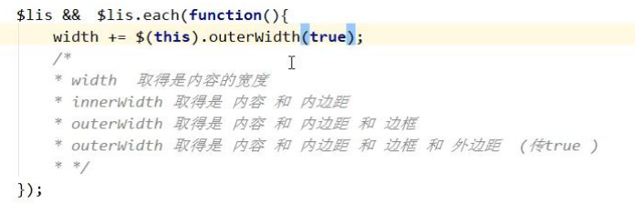

1.jQuery中关于宽度的方法的区别：
width（）--取得的是内容的宽度
innerwidth（）--content+padding
outerwidth（）--content+padding+border//可传入参数true、false
---->outerwidth（true）--content+padding+border+margin

2.两个标签：
sub上标
sup下标
3.利用文本环绕原理实现左右分栏：
文本部分应该先浮动，另一部分使用overflow:hidden（否则文字先overflow占位，另一部分后占位，实现不了左右分栏效果）
4.两种伪类选择器的区别复习
e:nth-child(n)
e:nth-of-type(n)
5.盒子阴影参数复习
bootstrap内的text-right--->css里的text-align:left
6.具有吸附效果的导航栏：
初始化组件将导航栏设置position：fixed，此时脱离文档流，若不定位，则仍在脱标前的位置显示。


原生事件：e.originalEvent
7.less的使用
1.原理及使用
本质上，LESS 包含一套自定义的语法及一个解析器，用户根据这些语法定义自己的样式规则，这些规则最终会通过解析器，编译生成对应的 CSS 文件。LESS 并没有裁剪 CSS 原有的特性，更不是用来取代 CSS 的，而是在现有 CSS 语法的基础上，为 CSS 加入程序式语言的特性。
2.基本语法
2.1注释

2.2 变量
less是通过@符号来定义变量

2.3 嵌入
2.3.1类名嵌入

2.3.2方法嵌入
这种情况下的传参，和变量一样，如果有默认值，一定要手动设置


2.4 嵌套

//伪类和伪元素，需要用&衔接

2.5 导入

2.6内置函数

部分函数如下：
lighten(@color, 10%); // 亮度增加 10%
darken(@color, 10%); // 亮度降低 10%
fadein(@color, 10%); // 透明度增加 10%
fadeout(@color, 10%); // 透明度降低 10%
fade(@color, 50%); // 设定透明度为 50%
***注意：
- 写完每一行代码都要加分号
- @---var
- 混入：如果类名后没有‘（）‘会被编译出来、
--->不能使用标签名（关键字）


- 嵌套


- 导入
--->相当于script标签
- 只要导入进来的文件，这个文件里所有的变量和方法都可以直接使用
- 地址要写对，引入文件的时候，后缀名可以省略
- 编译及定制
手动编译：1.编译哪个就在该文件所在的目录下打开命令窗口（shiift+鼠标右键）
2.cmd命令窗口输入：lessc+空格+要编译的文件（.less）+空格+编译完后的文件名（.css）；
定制：在线

本地
1.打开variables.less或者其他less文件，修改相关参数
2.使用手动方式编译bootstrap.less文件
rem和em
1.rem适配原理：
元素（rem）随着html的font-size变化---->怎样获取这个随屏幕尺寸变化的当前的font-size?---->屏幕宽度/640=当前font-size/100---->依据固定缩放比例计算当前font-size--->将该值赋给html--->元素依据自身设置好的rem值计算大小=====>rem适应
在640的环境下，把html的font-size设置为100px作为一个rem基数
当前屏幕宽/基础设计图的宽=当前屏幕html的font-size/基础环境(640)下的font-size

代码实现：
<!DOCTYPE html>
<html style="font-size: 100px">
<head lang="en">
<meta charset="UTF-8">
<meta name="viewport"
content="width=device-width, user-scalable=no, initial-scale=1.0, maximum-scale=1.0, minimum-scale=1.0"/>
<title></title>
<script>
/*让文字和标签的大小随着屏幕的尺寸做变话 等比缩放*/
var html = document.getElementsByTagName('html')[0];
console.log(html);
/*取到屏幕的宽度*/
var width = window.innerWidth;
console.log(width);
/* 640 100 320 50 */
var fontSize = width/640*100;
console.log(fontSize);
/*设置fontsize*/
html.style.fontSize = fontSize +'px';
window.onresize = function(){
var html = document.getElementsByTagName('html')[0];
console.log(html);
/*取到屏幕的宽度*/
var width = window.innerWidth;
console.log(width);
/* 640 100 320 50 */
var fontSize = width/640*100;
console.log(fontSize);
/*设置fontsize*/
html.style.fontSize = fontSize +'px';
}
</script>
<style>
body,html{
margin: 0;
padding : 0;
}
div{
width: 2rem;
height: 2rem;
background: red;
color: #fff;
}
</style>
</head>
<body>
<div>AAA</div>
</body>
</html>
2.认识rem
rem和em：
- 计算基数默认都是16px（基数未设置的情况下，行高设置为1）
- rem---计算基数是html的font-size大小//r--root--html
- em---计算基数是body的font-size大小
代码示例：
<!DOCTYPE html>
<html>
<head lang="en">
<meta charset="UTF-8">
<title></title>
<style>
*{
margin: 0;
padding: 0;
line-height: 1;
}
html{
font-size: 20px;
}
body{
font-size: 10px;
}
.rem{
font-size: 2rem;
}
.em{
font-size: 2em;
}
</style>
</head>
<body>
<div class="rem">aaaa</div>
<div class="em">aaaa</div>
</body>
</html>
4.em---计算基数是body的font-size大小
5.可使用rem设置元素的宽高
（通常psd中通行的尺寸是100px）
代码示例：
html{
font-size:100px;
}
假设psd中的尺寸如下，换算成rem即：
width:100px--->1rem
height:50px--->0.5rem
font-size:48px--->0.46rem
48/100--->0.46rem
---->换算规则：
元素的宽高字体大小==设计稿中规定的大小/html中的字体大小+‘rem’;